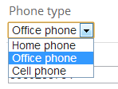

jTable API Reference - Field options
- columnResizable
- create
- edit
- defaultValue
- dependsOn
- display
- input
- inputClass
- inputTitle
- key
- list
- listClass
- options
- optionsSorting
- sorting
- title
- type
- visibility
- width
A field definition defines structure and behavior of a field of the record. It's generally formatted as:
FieldName: {
//Field options
}
columnResizable
boolean
default: true
A boolean value that indicates whether this column can be resized by user. Table's columnResizable option must be set to true (it's default) to use this option.
create
boolean
default: true
A boolean value that indicates whether this field is shown in the create record form.
Default value is false for the key field. True for other fields.
edit
boolean
default: true
A boolean value that indicates whether this field is shown in the edit record form.
Default value is false for the key field. True for other fields.
defaultValue
string
default: none
You can set a default value for a field. It must be a valid value. For instance, if the field is an option list, it must be one of these options.
dependsOn
string or array
default: none
This option is used to create cascaded dropdowns. If a combobox field depends on another combobox, jTable can automatically create cascaded dropdowns. See demo for usage.
Here, there is a sample usage of this option to provide Country/City cascade comboboxes:
CountryId: {
title: 'Country',
options: 'Demo/GetCountryOptions',
list: false
},
CityId: {
title: 'City',
dependsOn: 'CountryId', //Cities depends on countries.
options: function (data) {
if (data.source == 'list') {
//Return url of all cities for optimization.
return 'Demo/GetCityOptions?countryId=0';
}
//This code runs when user opens edit/create form or changes country combobox on an edit/create form.
return 'Demo/GetCityOptions?countryId=' + data.dependedValues.CountryId;
}
}
A field can be depended to more than one field. In this case, you can write fields seperated by comma as dependsOn: 'ContinentalId,CountryId' or as an array like dependsOn: ['ContinentalId', 'CountryId']
See options option for more information.
display
function
default: none
This option is a function that allows you to define a fully custom column for table. jTable directly shows return value of this function on the table. See the sample below:
TestColumn: {
title: 'Test',
display: function (data) {
return '<b>test</b>';
}
}
This sample Test column returns a bold 'test' string for all rows. You can return any text, html code or jQuery object that will be shown on the table. This method is called for each row. You can get record of the row using data.record. So, if your record has Name property, you can use data.record.Name property to get the Name.
display function can be used for many purposes such as creating calculated columns, opening child tables for a row... etc. See demos for detailed usage.
input
function
default: none
This option is a function that allows you to define a fully custom input element for create and edit forms. jTable directly shows return value of this function on the form. See the sample below:
Name: {
title: 'Name',
width: '20%',
input: function (data) {
if (data.record) {
return '<input type="text" name="Name" style="width:200px" value="' + data.record.Name + '" />';
} else {
return '<input type="text" name="Name" style="width:200px" value="enter your name here" />';
}
}
}
data argument has some fields those can be used while creating the input:
- data.formType: Can be 'create' or 'edit' according to the form.
- data.form: Reference to the form element as jQuery selection.
- data.record: Gets the editing record if this input is being created for edit form (if formType='edit'). So, it's undefined for 'create' form.
- data.value: Gets current value of the field. This is default value (if defined) of field for create form, current value of field for edit form.
While jTable automatically creates appropriate input element for each field, you can use input option to create custom input elements. Remember to set name attribute of input element if you want to post this field to the server.
inputClass
string
default: none
A string value that can be set as the class of an input item for this field in create/edit forms. So you can style input elements in the forms for this field. This can be useful when working with validation plug-ins (we will see soon).
inputTitle
string
default: none
This option can be used to show a different title for a field in edit/create forms. If it's not set, input title will be same as title option.
key
boolean
default: false
A boolean value that indicates whether this field is the key (primary key) field of the record. Every record must has one and only one key field that is used on update and delete operations.
If a field is marked as key, create and edit options are set to false as default.
If a key field is not editable in edit form, a hidden input element is generated for it. Thus, key value is post to server. If the key field is editable (with setting edit option to true), key's original value (the value before update) is post to server as jtRecordKey.
list
boolean
default: true
A boolean value that indicates whether this field is shown in the table.
listClass
string
default: none
A string value that can be set as class/classes of a cell of this field (td element) in the table. Thus, you can stylize fields in the table.
options
object, array, URL or a function
default: none
If this field's value will be selected in an option list (combobox as default, can be radio button list), you must supply a source. An option source can be one of these values:
- object: Property names are values, property values are display texts.
- array: An array of options.
- URL: A URL to download the option list for this field.
- function: A function that takes some arguments and returns an object, an array or a URL string.
Defining an object
This is the simplest way of defining options is creating an object like shown below:
PhoneType: {
title: 'Phone type',
options: { '1': 'Home phone', '2': 'Office phone', '3': 'Cell phone' }
}
Thus, jTable creates a dropdown list in edit/create form for that field:
'1', '2' and '3' are values of combobox items respectively.
Defining an array
You can also define an array of options as shown below:
PhoneType: {
title: 'Phone type',
options: [{ Value: '1', DisplayText: 'Home phone' }, { Value: '2', DisplayText: 'Office phone' }, { Value: '2', DisplayText: 'Cell phone' }]
}
Also, if values of your options are same as display texts, you can write as shown below:
ClassYear: {
title: 'Phone type',
options: ['1','2','3','4']
}
Defining a URL
You can define a URL to download array of options:
PhoneType: {
title: 'Class year',
options: '/Demo/GetPhoneTypes.php'
}
Your URL must return array of options just like described in the section above. A successfull return value from server is shown below:
{
"Result":"OK",
"Options":[
{
"DisplayText":"Home phone",
"Value":"1"
},
{
"DisplayText":"Office phone",
"Value":"2"
},
{
"DisplayText":"Cell phone",
"Value":"3"
}
]
}
Result can be "OK" or "ERROR". If it's "ERROR", you can supply a "Message" property to show to the user.
Defining a function
You can define a function that returns an object, an array or a URL string dynamically. Thus, you can show different options for specific records.
PhoneType: {
title: 'Phone type',
options: function(data) {
if (data.source == 'list') {
//Return url all options for optimization.
return '/Demo/GetPhoneTypes.php?UserType=0';
}
//This code runs when user opens edit/create form to create combobox.
//data.source == 'edit' || data.source == 'create'
return '/Demo/GetPhoneTypes.php?UserType=' + data.record.UserType;
}
}
If you return a URL as the sample above, jTable downloads options from returned URL just described in the section above.
For optimization, jTable caches all option lists based on URL, and gets options from local cache if you return exactly same URL. You can clear cache if you call data.clearCache() method in your function.
IMPORTANT: jTable also uses this function to show the related field in the table for each shown record. This is because your record contains Value of the field, not DisplayText and jTable needs to show display text (instead of value) in the table. So, when data.source=='list', returning different URLs causes more than one download to list records in the table. This may be a major performance problem. So, as shown the sample above, return URL of all options while listing (data.source=='list') and return filtered options in edit/create forms (if you need).
You may want to return the data from server with ana AJAX request. In this situation, you should get the data from server synhronously since you should return the options from the function. See demo and jQuery async option.
The function has data argument which has some fields/methods those can be used to determine returning option list:
- data.source: This field is used to know why this method is called. Can be 'list', 'create' or 'edit'.
- data.clearCache(): This method is used to clear cache for currently returning URL. So, you can ensure that your options will be re-downloaded.
- data.form: This field is used to get a reference to the create/edit form (as jQuery selection). It's valid if data.source is 'create' or 'edit'.
- data.record: This field is used to get related record with this function call. So, you can return options according to fields of the record (as shown sample). It's valid if data.source is 'list' or 'edit'
- data.dependedValues: If you define dependsOn option for this field, you can get current value of depended fields using data.dependedValues. See the sample in dependsOn option.
dependsOn option and data.dependedValues work as pair and provide you to create cascade dropdowns. See dependsOn option for sample usage. See demo for complete running example.
optionsSorting
string
default: none
As default, jTable does not sort options and shows in order which you supplied. This option can be used to automatically sort options. Possible values of this option:
- value: Sorts options according to value (ascending).
- value-desc: Sorts options according to value (descending).
- text: Sorts options according to display text (ascending).
- text-desc: Sorts options according to display text (descending).
sorting
boolean
default: true
Indicates that whether this column will be used to sort the table (If table is sortable).
title
string
default: none
Column header in the table and label in the forms for this field. This option is required if the field is shown on the table or create/edit forms.
type
string
default: text
Data type for this field. If field is text or number, no need to set type. Other types are:
- password: Show a password textbox for this field on edit/create forms.
- textarea: Shows a textarea for this field on edit/create forms.
-
date: A date field (not including time part). A jQueryUI date picker is automatically created for this field on edit/create forms. If a field is date, it can define additional options:
- displayFormat: Format of date. See jQueryUI datepicker formats.
- radiobutton: If field is a value from an option list, it can be a combobox (default) or radio button list. If it is a radio button list, set type as radiobutton. You must supply options list for this type.
-
checkbox: To show a checkbox while editing this field. If a field is checkbox, it can define additional options:
- values: Values for checked/unchecked states. Example: { '0' : 'Passive', '1' : 'Active' }. First value is for unchecked state, second value is for checked state.
- formText: By default, a checkbox's text changes when user changes the state of the checkbox. If you want to fix the text, you can set the formText option for this field (string).
- setOnTextClick: By default, when the user clicks the checkbox's text, the state of the checkbox changes. If you do not want that, you can set setOnTextClick to false.
- hidden: A hidden field can be used hidden fields in edit and create forms. It is not shown on the table. You may want to use defaultValue option with hidden types, thus given default value is automatically set to the hidden field on creating form. See master/child demo for sample usage.
visibility
string
default: 'visible'
A column (related to a field) can be showed or hided by user or this option. Values can be:
- fixed: This column is always visible and can not be hided by the user.
- visible: This column is visible as default but can be hided by the user.
- hidden: This column is hidden as default but can be showed by the user.
Note: User can open column selection list by right clicking the table header if columnSelectable option is true (it's true as default).
width
percentage
default: '10%'
Width of the column for this field in the table. Can be a percantage value (ex: '30%'). It's required if the field is shown on the table. It's best to complete all shown field widths to 100%.
NOTE: jTable is designed to fit it's container element, not for a fixed width. So, all columns will be completed to 100%. If you want to fix table's width, set it's container's width.
Advertisement: Professional startup template for ASP.NET MVC & AngularJs by creator of jTable!
 Based on metronic theme, includes pre-built pages like login, register, tenant, role, user, permission and setting management. Learn more...
Based on metronic theme, includes pre-built pages like login, register, tenant, role, user, permission and setting management. Learn more...